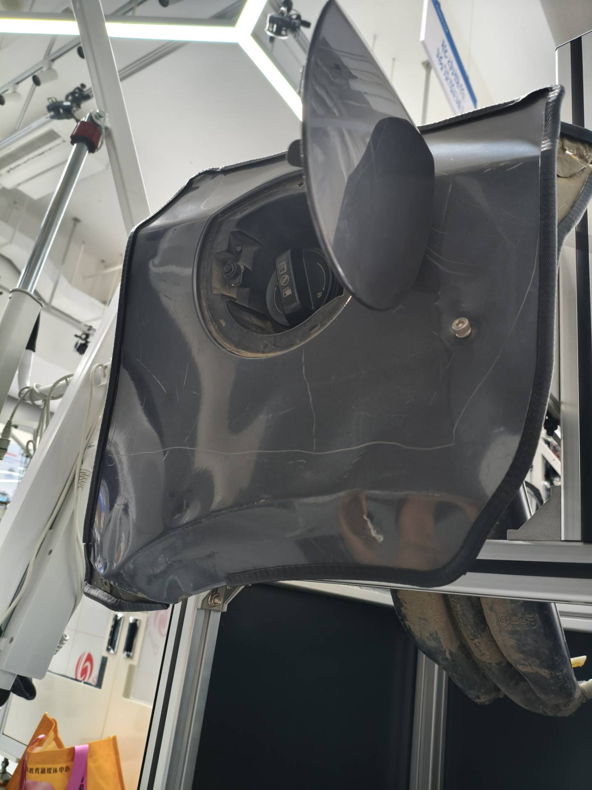
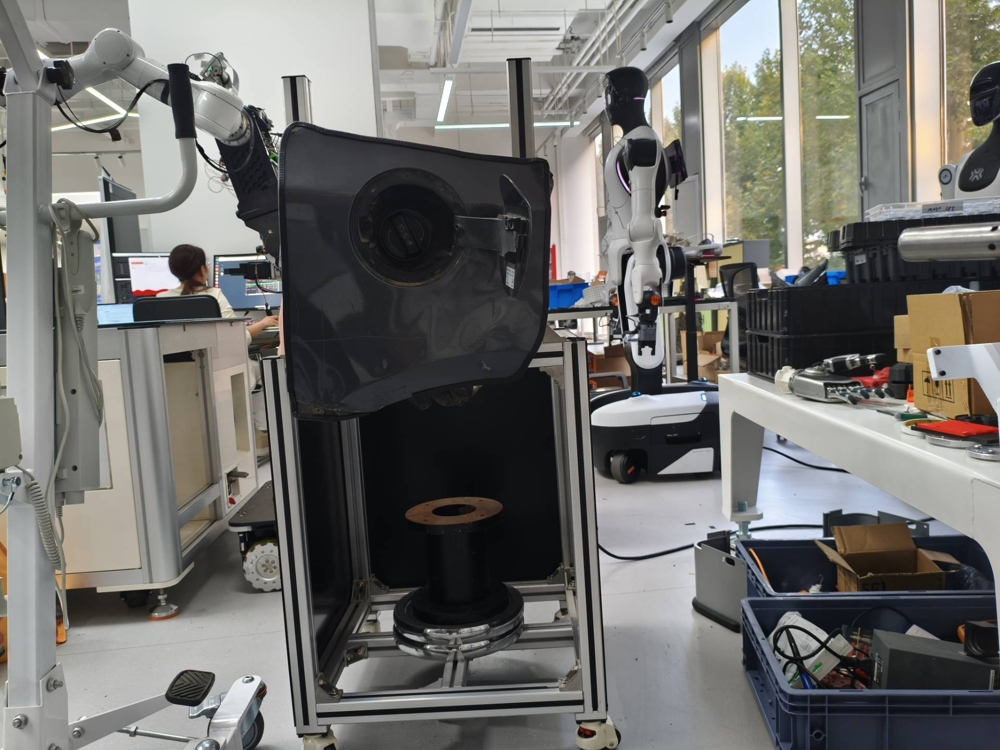

带油箱盖_右下.jpg：unique_candidate
定位分数 [0.7302232980728149]；SAM 质量分数 [0.954050600528717]


定位来自已绑定权重的云端预测；分割为本机此次真实执行。分数不是语义验收结论；无框时不补人工提示。
定位分数 [0.7302232980728149]；SAM 质量分数 [0.954050600528717]

定位分数 [0.6726338267326355]；SAM 质量分数 [0.9624015688896179]


定位分数 []；SAM 质量分数 []

定位分数 []；SAM 质量分数 []